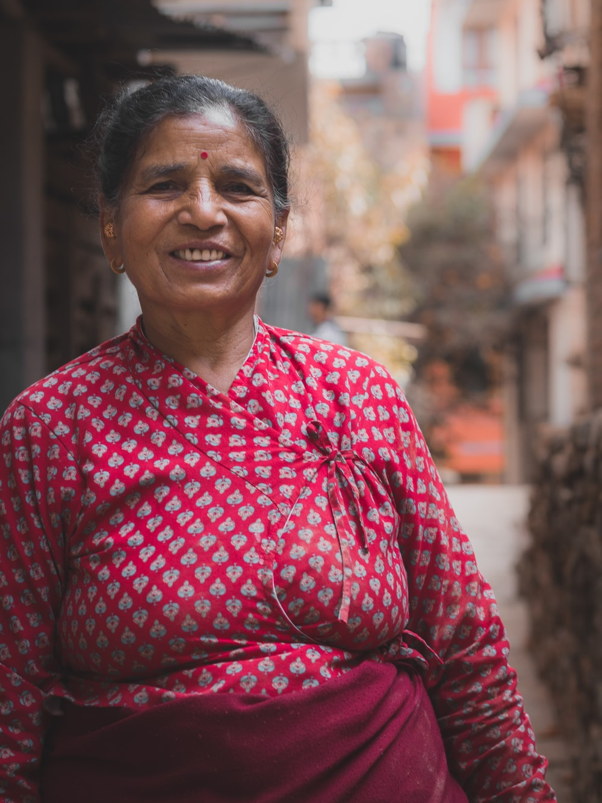

About The Green Foundation

The Green Foundation was founded in August 2005 and is a non-profit organization that aims to assist and uplift rural communities with the support of environmental projects. We have raised more than R 4 million to date and have won the Hope Award in 2007 and 2016.

To date, we have assisted 45 rural communities in India, USA and Australia and planted more than 30,000 trees. For a full outline of our projects per area, please see our project booklet, attached.
Our staff currently includes two full time project coordinators, a marketing coordinator and five administrative staff members. We also have four part time volunteers during various stages of the year. Our main message is that poverty and environmental degradation are intrinsically linked. By educating communities to respect the environment, opportunities for income generation are created.